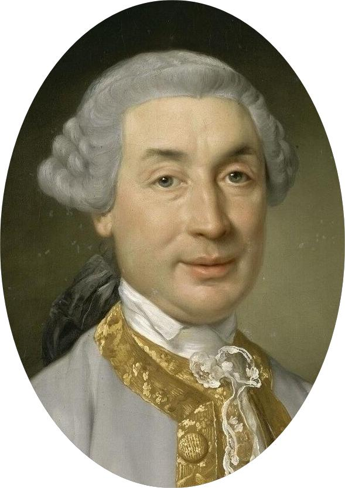
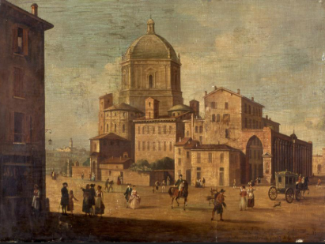
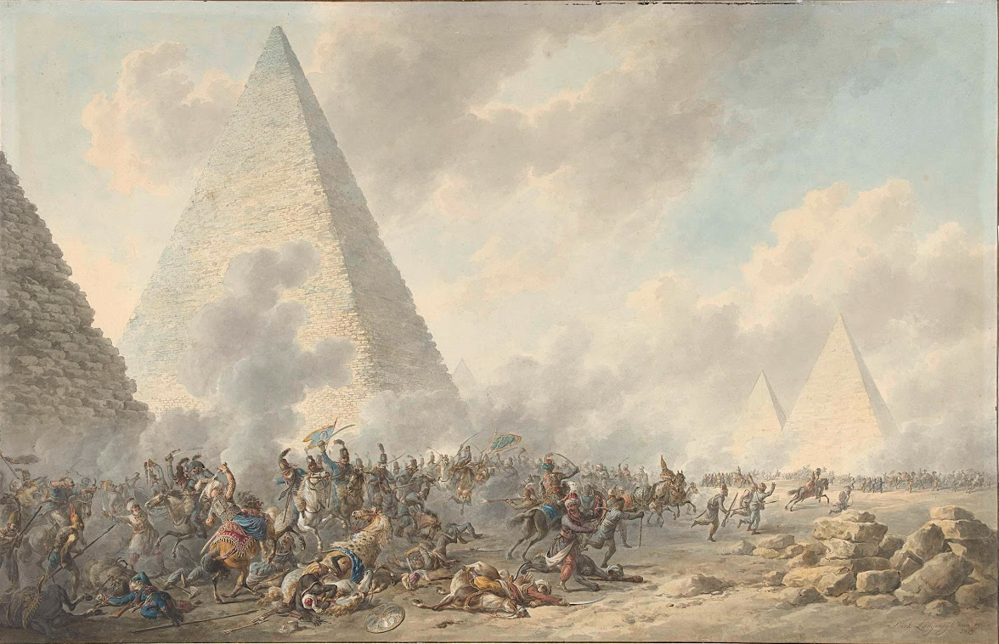

Napoleão Bonaparte nasceu em 15 de agosto de 1769, em Ajaccio, capital da ilha de Córsega, que havia sido recentemente adquirida pela França. Ele veio de uma família da pequena nobreza italiana, e seu nome original em italiano era Napoleone Buonaparte. Na infância, Napoleão estudou inicialmente em sua cidade natal e, aos 9 anos, foi enviado para a França para continuar seus estudos. Lá, ele ingressou na Academia Militar de Brienne e, posteriormente, em 1784, foi para a Escola Real Militar de Paris, onde deu início à sua carreira militar. Durante sua juventude, Napoleão venceu dificuldades como o preconceito pelo seu sotaque corsicano, mas destacou-se especialmente em matemática e ciências militares, tornando-se oficial de artilharia aos 16 anos. Sua passagem para a França marcou o começo da ascensão que o levaria a ser um dos maiores líderes militares e políticos da história francesa.

O inicio de sua carreira militar
Ao se formar em setembro de 1785, Bonaparte foi oficializado como segundo tenente no regimento de artilharia. Ele serviu em Valence e Auxonne até depois do início da Revolução em 1789 e tirou quase dois anos de licença na Córsega e Paris durante esse período. Naquela época, ele era um nacionalista corso fervoroso e escreveu ao líder corso Pasquale Paoli em maio de 1789: "Enquanto a nação estava morrendo, eu nasci. Trinta mil franceses foram vomitados em nossas costas, afogando o trono da liberdade em ondas de sangue. Essa foi a visão odiosa que foi a primeira a me impressionar".
Ele passou os primeiros anos da Revolução na Córsega, lutando em um complexo conflito de três vias entre monarquistas, revolucionários e nacionalistas da Córsega. Ele era um defensor do movimento republicano jacobino, organizando clubes na Córsega, e recebeu o comando de um batalhão de voluntários. Ele foi promovido a capitão do exército regular em julho de 1792, apesar de exceder sua licença e liderar uma revolta contra as tropas francesas.
Ele entrou em conflito com Paoli, que havia decidido se separar da França e sabotar a contribuição da Córsega à Expédition de Sardaigne, impedindo um ataque francês à ilha da Sardenha em La Maddalena. Bonaparte e sua família fugiram para o continente francês em junho de 1793 por causa da separação com Paoli.
Cerco de Toulon
Em julho de 1793, Bonaparte publicou um panfleto pró-republicano intitulado Le souper de Beaucaire (Ceia em Beaucaire) que lhe valeu o apoio de Augustin Robespierre, irmão mais novo do líder revolucionário Maximilien de Robespierre. Com a ajuda de seu colega corso Antoine Christophe Saliceti, Bonaparte foi nomeado comandante de artilharia das forças republicanas no cerco de Toulon.
Ele adotou um plano para capturar uma colina onde armas republicanas poderiam dominar o porto da cidade e forçar os britânicos a evacuar. O ataque à posição levou à captura da cidade, mas durante ela Bonaparte foi ferido na coxa. Ele foi promovido a general de brigada aos 24 anos. Chamando a atenção do Comitê de Segurança Pública, ele foi encarregado da artilharia do Exército da Itália na França.
Napoleão passou algum tempo como inspetor de fortificações costeiras na costa do Mediterrâneo, perto de Marselha, enquanto aguardava a confirmação do posto do Exército da Itália. Ele elaborou planos para atacar o Reino da Sardenha como parte da campanha da França contra a Primeira Coalizão. Augustin Robespierre e Saliceti estavam prontos para ouvir o recém-promovido general de artilharia.
O exército francês executou o plano de Bonaparte na Batalha de Saorgio, em abril de 1794, e depois avançou para capturar Ormea nas montanhas. De Ormea, seguiram para o oeste para flanquear as posições austro-sardenha em torno de Saorge. Depois dessa campanha, Augustin Robespierre enviou Bonaparte em missão à República de Gênova para determinar as intenções daquele país em relação à França.
A Conquista da Italia
A Coquista da Italia realizada por Napoleão durante os anos de 1796 a 1797, foi uma campanha militar que foi vitoriaosa para os franceses e resultou na popularidade de Napoleão, que resultou na derrota dos austriacos em 1797 na cidade de Leoben e que resultou no fim da 1°coalizão, no estabelecimento de republica aliadas a França e no aumento do poder e popularidade de Bonaparte.
Napoleão assumio o comando no exercito e liderou em importantes batalhas na Sardenha, Mantua, Verona, Parma, Genova, Milão, Modena, Regio, Ferrara, Massa-Carrara, Toscana, Lombardia, Lucca e Veneza.
Em Abril ele invade a Sardenha e o Rei Vitor Amadeu III e capturado e morre em Outubro do mesmo ano, ascendendo Carlos Emanuel IV que era casado com Clotilde da França Irmão do Quilhotinado Luís XVI. Em Maio de 1796 ele invade Milão, e Napoleão estabelece uma série de repúblicas aliadas no norte da Itália, como a República Cisalpina. Janeiro de 1797, As forças francesas, sob o comando de Napoleão, vencem os austríacos na Batalha de Rivoli, uma vitória crucial que efetivamente encerrou as tentativas austríacas de romper o cerco a Mântua e de retomar o controle do norte da península. Março de 1797, A conquista militar se traduz em uma vitória diplomática com a assinatura do Tratado de Tolentino, que força os Estados Pontifícios a cederem territórios à França. Abril de 1797, A Paz de Leoben marca a derrota da Áustria, que é forçada a assinar o armistício e a aceitar a nova ordem na Itália. A guerra da Primeira Coalizão é efetivamente encerrada para a França. Outubro de 1797 O Tratado de Campo Formio é assinado entre a França e a Áustria, oficializando os termos da paz, apesar de o tratado frustrar as esperanças de independência de Veneza, que foi anexada ao Estado austríaco.

Batalhas das Piramides
A Batalha das Pirâmides ocorreu em 21 de julho de 1798, durante a Campanha do Egito liderada por Napoleão Bonaparte, após a captura de Alexandria e a travessia do deserto rumo ao Cairo. Os mamelucos, elite militar otomana no Egito comandada por Murad Bey e Ibrahim Bey, reuniram forças superiores em número, com forte cavalaria armada de espadas, arcos e flechas, mas tecnologicamente inferiores à infantaria e artilharia francesas. Em 13 de julho, uma escaramuça em Chobrakit resultou em vitória francesa menor, destruindo a nau capitânia mameluca e forçando recuo inimigo.
Os franceses contavam com cerca de 25.000 homens em cinco divisões, incluindo artilharia e pouca cavalaria, avançando com flotilha fluvial carregando suprimentos e cientistas. Os mamelucos somavam dezenas de milhares, divididos pelo Nilo: Murad Bey entrincheirado em Embabeh com cavalaria pesada, e Ibrahim Bey em campo aberto na margem oposta. Apesar da superioridade numérica mameluca, sua tática dependia de cargas de cavalaria, vulneráveis a formações modernas.
Napoleão formou seu exército em grandes quadrados divisionais retangulares, com artilharia e infantaria nos centros, para repelir cargas de cavalaria, tática por ele concebida. Por volta das 15h30, Ayyub Bey liderou ataque mameluco surpresa contra os quadrados; os franceses responderam com fogo disciplinado de mosquetes e canhões, dizimando os atacantes. Um quadrado avançou sobre Embabeh, enquanto outro foi para o centro egípcio; milicianos árabes fugiram afogados no Nilo, com pelo menos 1.000 mortos, e os franceses capturaram o acampamento mameluco em poucas horas.
As baixas francesas foram cerca de 300, enquanto mamelucas e otomanos sofreram milhares de mortos, com Murad Bey fugindo para o Alto Egito e Ibrahim para a Síria, efetivamente conquistando o Cairo três dias depois. Napoleão celebrizou o momento com o discurso: "Soldados! Do alto destas pirâmides, quarenta séculos vos contemplam!", expondo o declínio otomano ante o poder francês. A vitória selou o controle francês inicial do Egito, instalando nova administração, mas foi ofuscada pela derrota naval em Aboukir dias depois.

18 de Brumario
O 18 de Brumário refere-se ao golpe de Estado ocorrido em 9 e 10 de novembro de 1799 (18 Brumário do Ano VIII no calendário revolucionário francês), liderado por Napoleão Bonaparte, que derrubou o Diretório e instaurou o Consulado, marcando o fim da Revolução Francesa e o início de sua ditadura.
A França vivia instabilidade com crises econômicas, derrotas militares e corrupção no Diretório, formado por cinco diretores após a Constituição de 1795. Napoleão, recém-chegado do Egito, aliou-se a políticos como Sieyès e seu irmão Lucien para explorar o descontentamento da burguesia, que buscava ordem e estabilidade em vez de radicalismo jacobino.
No dia 9, o Conselho dos Anciãos transferiu a Assembleia para Saint-Cloud sob pretexto de conspiração jacobina, enquanto o Conselho dos Quinhentos se reuniu no Orangerie. Napoleão tentou dissolver os conselhos à força, mas foi repelido; Lucien Bonaparte, presidente dos Quinhentos, declarou dissolução e grenadiers invadiram, dispersando os deputados sem derramamento de sangue significativo.
Napoleão tornou-se Primeiro Cônsul com poderes absolutos, ao lado de Cambacérès e Lebrun, centralizando o governo e conciliando facções: restabeleceu o culto católico, anistiou emigrados nobres, criou o Banco de França e promulgou o Código Civil. O golpe consolidou a burguesia no poder e pavimentou o caminho para o Império em 1804, estabilizando a França mas impondo autoritarismo.